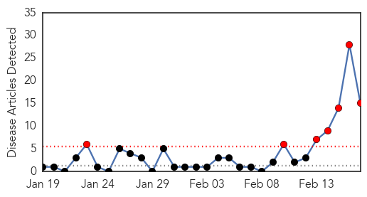
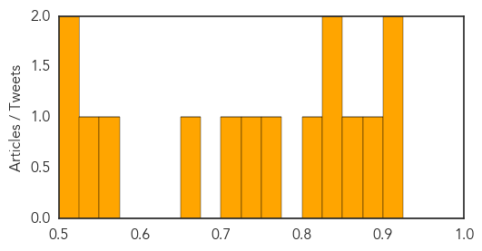
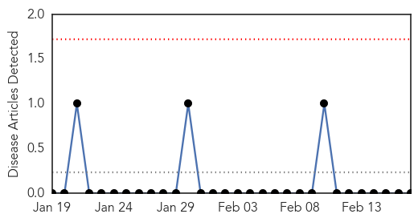

Hepatitis
30-Day Web Trend
7 alerts, 0 warnings

30-Day Twitter Trend
0 alerts, 0 warnings

Article Locations

Article Confidences
Top Articles:
- 0.925
- Australians Get Hepatitis A From Chinese Berries
- 0.918
- Ban on golgappa proposed in Berhampur due to jaundice
- 0.881
- Australians Get Hepatitis After Eating Contaminated Berries from China
- 0.870
- Nanna's berry recall sparks Hepatitis A blood donor concern
- 0.839
- Hepatitis cases blamed on berries from China
- 0.825
- Public Health Services and Systems Research Explored in Latest Issue of the American Journal of Public Health
- 0.819
- Toxic river flows through Chinese city where hepatitis a berries are grown
- 0.772
- Photos show why we should all think twice before buying 'fresh' food from China
- 0.742
- Australian Food Company recalls Raspberry Products
- 0.717
- I have a patent for creating HIV/AIDS Virus: Dr. Robert Gallo
- 0.652
- First case of berry-related hepatitis A confirmed in WA
- 0.561
- Blood donors asked to contact Red Cross over hepatitis A fears
- 0.535
- Raspberries common link in hep A outbreak
- 0.511
- Red Cross quarantines blood over Hepatitis A berry outbreak
- 0.500
- Ballarat Secondary College students exposed to hepatitis A berries
Top Tweets:
-
No tweets found for Feb 17, 2015
Hemmorhagic Fever
30-Day Web Trend
0 alerts, 0 warnings

30-Day Twitter Trend
0 alerts, 0 warnings

Article Locations

Article Confidences

Top Articles:
-
No articles found for Feb 17, 2015
Top Tweets:
-
No tweets found for Feb 17, 2015